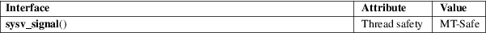

sysv_signal − signal handling with System V semantics
Standard C library (libc, −lc)
#define
_GNU_SOURCE /* See feature_test_macros(7) */
#include <signal.h>
typedef void (*sighandler_t)(int);
sighandler_t sysv_signal(int signum, sighandler_t handler);
The sysv_signal() function takes the same arguments, and performs the same task, as signal(2).
However sysv_signal() provides the System V unreliable signal semantics, that is: a) the disposition of the signal is reset to the default when the handler is invoked; b) delivery of further instances of the signal is not blocked while the signal handler is executing; and c) if the handler interrupts (certain) blocking system calls, then the system call is not automatically restarted.
The sysv_signal() function returns the previous value of the signal handler, or SIG_ERR on error.
As for signal(2).
For an explanation of the terms used in this section, see attributes(7).

Use of sysv_signal() should be avoided; use sigaction(2) instead.
On older Linux systems, sysv_signal() and signal(2) were equivalent. But on newer systems, signal(2) provides reliable signal semantics; see signal(2) for details.
The use of sighandler_t is a GNU extension; this type is defined only if the _GNU_SOURCE feature test macro is defined.
None.
sigaction(2), signal(2), bsd_signal(3), signal(7)